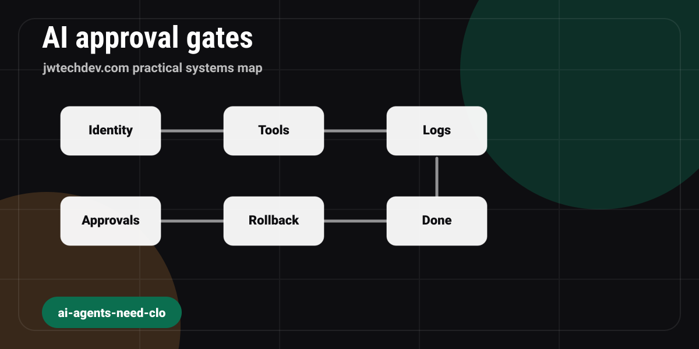

AI Agents Need Cloud-Style Approval Gates Before They Touch Production
AI agents are powerful because they can use tools. That is exactly why builders should treat them like cloud principals: scoped permissions, logs, approvals, and rollback before production access.

Quick answer
What approval gates should AI agents have before they can touch real systems?
The Short Version
AI agents are becoming useful because they can do more than talk. They can call tools, hand work to other agents, read files, change records, draft code, trigger workflows, and sometimes touch systems that matter.
That is also the exact moment the conversation needs to become less magical and more boring.
Not boring in the bad way. Boring in the cloud infrastructure way. Boring like IAM policies, logs, deployment gates, rollback plans, and "who approved this change?"
The mistake beginners make with AI agents is treating them like smarter chatbots. The better model is to treat them like cloud principals.
A cloud principal is not trusted because it sounds confident. It is trusted because it has a defined identity, scoped permissions, observable activity, and limits on what it can change. An agent should be treated the same way.
Start With What The Agent Can Read
The first boundary is read access.
Can the agent read public docs only? Local project files? Customer data? Financial records? Source code? Calendar events? Slack messages? Browser history?
Those are not the same risk level.
Read access is still access. If an agent can read sensitive information, it can summarize it, leak it into logs, include it in a draft, or send it to a tool you did not mean to involve.
The safe beginner move is to give the agent the smallest useful context. Public docs, local drafts, and intentionally selected files are a cleaner starting point than entire drives, inboxes, or production databases.
Then Define What It Can Write
Write access is where things get serious.
An agent that writes a local draft is one category. An agent that edits a production website, sends an email, changes DNS, updates a payment product, deletes a file, or activates lead capture is a completely different category.
The first one is help. The second one is operational authority.
For JWTechDev.ai, this is why the working pattern is local-first:
- draft the article locally,
- create an approval task,
- attach the preview,
- wait for explicit approval,
- only then publish through an allowlisted path.
That might feel slower than "let the agent do everything," but it is the difference between a workflow and a loose cannon.
Tool Calls Need Logs
If an agent calls tools, you need to know what happened.
OpenAI's Agents SDK tracing model is a good example of the shape builders should expect: traces and spans around workflows, model generations, tool calls, handoffs, guardrails, and custom events. You want that kind of event trail because it answers the uncomfortable questions later.
What did the agent try to do?
What tool did it call?
What input did it pass?
What changed?
What failed?
Who approved it?
Without logs, an agentic workflow becomes a story you hope is true.
Handoffs Are Not Magic Either
Agent handoffs sound advanced, but the infrastructure question is still basic: what changes when work moves from one agent to another?
If the first agent has approval rules but the second agent gets broader context or stronger tools, you may have accidentally created a bypass. A specialist agent should not inherit more authority just because it has a more specific job title.
When a workflow uses multiple agents, each lane still needs boundaries:
- what this agent owns,
- what it can read,
- what it can write,
- what it must hand back for review,
- what it cannot do at all.
That is not bureaucracy. That is how you keep delegation from becoming drift.
Approval Gates Should Be Explicit
The approval gate should not be "the agent seemed sure."
Approval should be a clear state change. For example:
- `Drafted`
- `Needs review`
- `Approved for site draft`
- `Approved for public publish`
- `Hold`
For higher-risk actions, the approval should name the exact thing being approved. "Approved" is too vague. "APPROVED: publish the July 27 JWTechDev.ai article draft with slug ai-agents-need-cloud-approval-gates" is much better.
The more specific the approval, the less room there is for the system to guess.
Rollback Is Part Of The Feature
If an agent can change something public, the workflow needs a rollback path before the change ships.
For a static website, that might mean a git commit, a known previous commit, and a clear push history. For a database, it might mean backups and migration plans. For a message, rollback may be impossible, which is exactly why outbound sends need more caution than local drafts.
The question is simple: if this goes wrong, how do we recover?
If the answer is "we cannot," the agent should not have direct authority over that action.
The Beginner-Friendly Rule
Here is the practical rule:
Let agents draft freely, but make them earn write access.
Start with read-only research. Then local drafts. Then reviewed file edits. Then approved commits. Then public publishing only through a narrow, logged path.
That progression is not anti-AI. It is how you use AI without handing your operating system to a confident autocomplete box wearing a hard hat.
The future is not "never let agents act."
The future is "agents can act inside systems that know what they are allowed to do."
That is cloud thinking. Identity, permissions, logs, approvals, rollback.
If you learn those five ideas, AI agents stop feeling like magic and start looking like infrastructure.
Sources checked
Want the working resource?
Start with the Cloud Infrastructure First Map before giving an AI workflow access to real systems.
Get resources